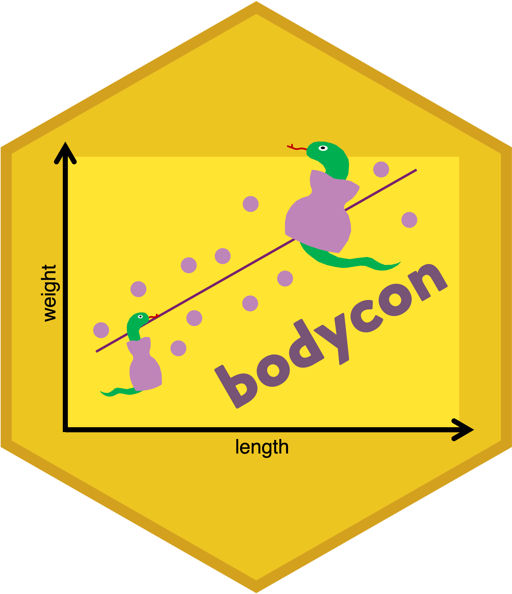
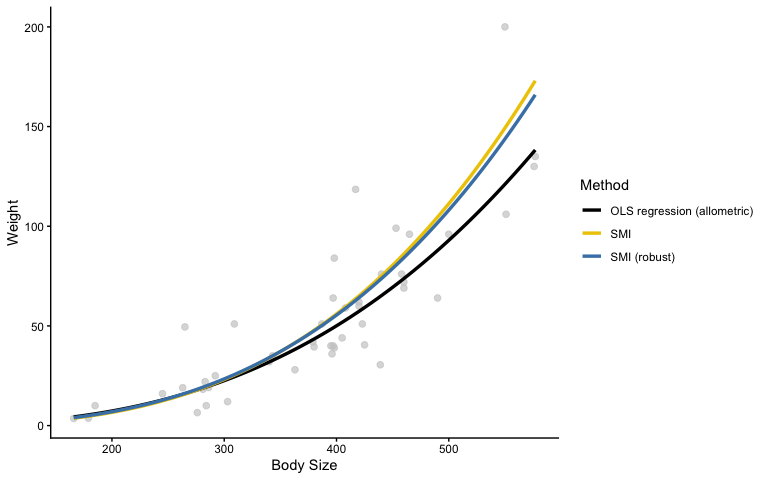
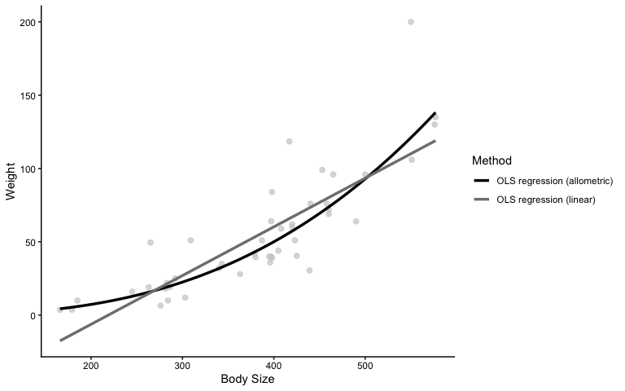
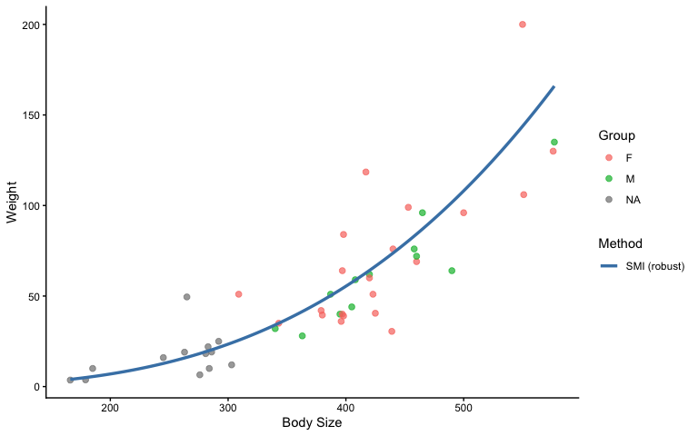
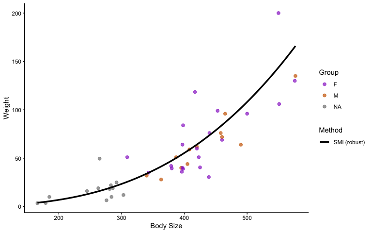

bodycon Quick Start Guide
Julia Riley & Fonti Kar
2026-10-04
Source:vignettes/bodycon.Rmd
bodycon.Rmd
bodycon is an R package for calculating commonly used body
condition indices in wildlife ecology. Body condition is often used as a
proxy for individual health and energetic reserves when direct measures
of fitness, like survival or reproductive success, are difficult to
obtain. This package provides functions for calculating several widely
used body condition indices from measurements of animal body size and
mass, with tools for comparing methods and visualising results. We hope
to continue to develop bodycon to expand the taxa and
approaches to which it can be applied.
Installation
Install from CRAN
If you are installing the released version of bodycon
from CRAN:
install.packages("bodycon")Install the development version
To install the development version from GitHub:
install.packages("remotes")
remotes::install_github("julia-riley/bodycon")Example Datasets
Two example datasets are included with bodycon to
demonstrate the functions in the package.
gartersnake
The gartersnake dataset contains morphological
measurements of 46 Maritime Gartersnakes (Thamnophis sirtalis
pallidulus) collected in New Brunswick and Nova Scotia, Canada
during summer 2022. The dataset includes measurements of body size and
mass that can be used to calculate body condition indices. The body size
measurement is snout-vent length (SVL), which is the distance from the
snake’s snout to the anterior edge of their cloaca and was recorded in
mm. The weight measure is mass (g).
You can view the structure of the gartersnake dataset
using:
dplyr::glimpse(gartersnake)
#> Rows: 46
#> Columns: 6
#> $ id_num <dbl> 1, 3, 4, 5, 6, 7, 8, 9, 10, 11, 12, 13, 14, 16, 18, 19…
#> $ age_class <chr> "J", "J", "A", "A", "J", "J", "A", "A", "J", "J", "A",…
#> $ sex <chr> NA, NA, "F", "F", NA, NA, "F", "F", NA, NA, "M", NA, "…
#> $ mass_g <dbl> 3.71, 3.59, 35.00, 39.50, 18.20, 19.10, 118.50, 51.00,…
#> $ svl_mm <dbl> 179, 166, 343, 380, 281, 286, 417, 309, 284, 303, 387,…
#> $ total_length_mm <dbl> 220.0, 208.0, 421.0, 485.0, 370.0, 304.5, 552.5, 410.0…
salamander
The salamander dataset contains morphological
measurements from 128 Eastern Red-backed Salamanders (Plethodon
cinereus) collected in New Brunswick, Canada in the summer of 2022.
The dataset includes measurement of size (SVL in mm) and mass data for
each individual salamander that can be used to calculate body condition
indices.
You can view the structure of the salamander dataset
using:
dplyr::glimpse(salamander)
#> Rows: 128
#> Columns: 8
#> $ salamander_ID <chr> "J1002", "J1005", "J1009", "J1011", "J1015", "J1016", …
#> $ sex <chr> "F", "F", "F", "F", "F", "F", "F", "J", "M", "F", "F",…
#> $ morph <chr> "RB", "RB", "RB", "RB", "RB", "RB", "RB", "RB", "RB", …
#> $ gravid <chr> "n", "n", "n", "n", "n", "n", "n", "n", "n", "n", "n",…
#> $ age <chr> "A", "A", "A", "A", "A", "A", "A", "J", "A", "A", "A",…
#> $ mass_g <dbl> 0.50, 0.47, 1.13, 0.84, 0.63, 0.63, 0.86, 0.19, 0.86, …
#> $ svl_mm <dbl> 34.87, 34.98, 41.79, 38.53, 35.04, 31.76, 39.27, 24.22…
#> $ total_length_mm <dbl> 74.77, 65.62, 85.55, 79.76, 75.06, 66.32, 78.73, 43.28…Calculation of body condition indices
The bodycon package provides several functions for
calculating body condition indices from measurements of animal body size
and mass. The bci() function can be used to calculate
indices using one or more methods, while separate functions are also
available for each method. The package currently includes three methods:
OLS residuals, the scaled mass index (SMI) using classical standardised
major axis (SMA) regression, and the SMI using robust SMA regression.
All methods require a standardised measure of body size (i.e., tarsus
length for birds or snout-vent length for reptiles) and a measure of
body mass.
Residuals from ordinary least squares regression
This residual method estimates body condition indices from the
residuals of an ordinary least squares regression (OLS). This is a
traditional approach in ecology (Krebs and Singleton 1993). The method
is specified as "resid_ols", and see the examples below of
using it to calculate body condition of gartersnakes:
bci_resid_ols(gartersnake, svl_mm, mass_g)
#> # A tibble: 46 × 1
#> resid_allometric
#> <dbl>
#> 1 -0.372
#> 2 -0.196
#> 3 0.0686
#> 4 -0.0945
#> 5 -0.0324
#> 6 -0.0331
#> 7 0.746
#> 8 0.735
#> 9 -0.661
#> 10 -0.658
#> # ℹ 36 more rowsAll bodycon functions can also be used with the native R pipe
(|>). For example,
gartersnake |> bci_resid_ols(svl_mm, mass_g) is
equivalent to the example above.
By default, bci_resid_ols() assumes an allometric
relationship between body size and mass, with both variables
log-transformed before the OLS regression is fitted. This is a common
approach for modelling the relationship between body size and mass, but
the choice of relationship should be evaluated for the data and species
being studied.
You can instead specify relation = "linear" to fit the
relationship using the untransformed measurements. However, this assumes
that mass increases linearly with body size. Because a linear
relationship may not adequately describe the relationship between body
size and mass, we recommend examining the data and fitted relationship
before choosing this option.
Scaled mass index (SMI)
Residual-based body condition indices have been widely used in ecology, but their use has been critiqued. Concerns include the statistical assumptions of residual-based approaches (García-Berthou, 2001), their sensitivity to methodological choices (Schulte-Hostedde et al., 2005; Peig and Green, 2009), and whether their appropriateness varies among taxa (Jakob et al., 1996; Băncilă et al., 2010; Labocha and Hayes, 2012). The scaled mass index (SMI) provides an alternative approach for estimating body condition that was developed by Peig and Green (2009).
The SMI estimates expected body mass at a standardised body size
based on the scaling relationship between body size and mass. In
bodycon, the classical SMI method estimates the scaling
exponent using classical standardised major axis (SMA) regression, while
the robust SMI method estimates the scaling exponent using robust SMA
regression. The SMI approach assumes an allometric relationship between
body size and mass, so both measurements are log-transformed before the
scaling relationship is estimated.
SMI using standardised major axis regression
The bci_smi() function calculates SMI using classical
standardised major axis (SMA) regression. For example, we can calculate
SMI for the salamander dataset using:
bci_smi(salamander, svl_mm, mass_g)
#> # A tibble: 128 × 1
#> smi
#> <dbl>
#> 1 0.459
#> 2 0.427
#> 3 0.611
#> 4 0.576
#> 5 0.570
#> 6 0.760
#> 7 0.558
#> 8 0.506
#> 9 0.532
#> 10 0.626
#> # ℹ 118 more rowsSMI estimation using SMA can be sensitive to outliers (i.e., data
points that may distort the expected relationship between body length
and mass). This can have a strong influence on the estimated
relationship between body size and mass. When outliers are present,
robust SMA regression provides an alternative approach to estimating SMI
using the bci_smi_rob() function.
SMI using robust standardised major axis regression
The bci_smi_rob() function calculates SMI using robust
standardised major axis (SMA) regression. This approach reduces the
influence of potential outliers when estimating the relationship between
body size and mass.
For example, SMI can be calculated using robust SMA regression for
the salamander dataset:
bci_smi_rob(salamander, svl_mm, mass_g)
#> # A tibble: 128 × 1
#> smi_rob
#> <dbl>
#> 1 0.458
#> 2 0.427
#> 3 0.606
#> 4 0.573
#> 5 0.569
#> 6 0.762
#> 7 0.554
#> 8 0.513
#> 9 0.528
#> 10 0.622
#> # ℹ 118 more rowsRobust SMA regression can be useful when outliers are present and may disproportionately influence the estimated relationship between body size and mass.
Using multiple methods at once
The bci() function allows you to calculate body
condition indices using multiple methods at once. This can be useful
when you want to compare how estimates of body condition differ among
methods.
For example, you can calculate indices using the residual OLS, SMI, and robust SMI methods:
bci(gartersnake, svl_mm, mass_g,
method = c("resid_ols", "smi", "smi_rob"),
relation = c("linear", "allometric"))
#> Warning: The 'linear' relation applies only to the OLS residual method; SMI
#> methods always use allometric (log-log) scaling.
#> Warning: OLS residual method used a linear (non-log) relationship. This assumes
#> a linear relationship between body size and mass.
#> # A tibble: 46 × 4
#> resid_linear resid_allometric smi smi_rob
#> <dbl> <dbl> <dbl> <dbl>
#> 1 16.9 -0.372 38.0 35.6
#> 2 21.1 -0.196 46.4 43.2
#> 3 -6.29 0.0686 48.4 47.9
#> 4 -14.1 -0.0945 39.8 39.8
#> 5 -2.49 -0.0324 46.5 45.3
#> 6 -3.25 -0.0331 46.2 45.1
#> 7 52.6 0.746 89.8 90.4
#> 8 21.0 0.735 97.2 95.5
#> 9 -11.7 -0.661 24.7 24.1
#> 10 -16.0 -0.658 24.3 23.8
#> # ℹ 36 more rowsThe relation argument specifies whether the residual OLS
method should use a linear or allometric relationship. The SMI methods
always use an allometric relationship. Thus, in the example above, both
linear and allometric OLS residual indices are calculated, while the
classical and robust SMI methods are calculated using their respective
SMA scaling exponents.
Including individual identifiers
If your dataset contained a unique identifier for each individual,
you can include it using the id argument. This adds the
identifier to the output, making it easier to match body condition
estimates to individual animals.
For example:
bci(gartersnake, svl_mm, mass_g,
id = id_num,
method = c("resid_ols", "smi", "smi_rob"))
#> # A tibble: 46 × 4
#> id resid_allometric smi smi_rob
#> <dbl> <dbl> <dbl> <dbl>
#> 1 1 -0.372 38.0 35.6
#> 2 3 -0.196 46.4 43.2
#> 3 4 0.0686 48.4 47.9
#> 4 5 -0.0945 39.8 39.8
#> 5 6 -0.0324 46.5 45.3
#> 6 7 -0.0331 46.2 45.1
#> 7 8 0.746 89.8 90.4
#> 8 9 0.735 97.2 95.5
#> 9 10 -0.661 24.7 24.1
#> 10 11 -0.658 24.3 23.8
#> # ℹ 36 more rowsVisual comparison of body condition indices
Visualising body condition indices alongside the observed relationship between body size and mass can help you compare methods and assess whether the assumptions of different approaches are appropriate for your data. These plots should be considered alongside the relevant literature and the goals of your analyses when selecting a body condition index.
The plot_bci() function allows you to visualise:
- OLS residuals (resid_ols)
- Scaled Mass Index using standardised major axis (SMA) regression (smi)
- Scaled Mass Index using robust SMA regression (smi_rob)
Raw data can also be grouped (e.g., by sex or population), and colours can be customized for both raw points and reference relationships.
Comparing body condition methods
The simplest approach is to plot multiple body condition methods together:

Comparing linear and allometric relationships
You can also use plot_bci to compare linear
vs. allometric relationships between body size and mass. This can be
useful when evaluating whether the assumptions of the residual OLS
method are appropriate for your data.
plot_bci(
gartersnake,
svl_mm,
mass_g,
method = c("resid_ols"),
relation = c("linear", "allometric")
)
Grouping and customising plots
The group argument allows you to highlight groups within
the raw data. For example, you can separate male and female gartersnakes
when plotting the SMI using robust regression:

Colours for raw data groups and reference relationships can be
customised using group_colours and
method_colours.
plot_bci(
gartersnake,
svl_mm,
mass_g,
method = c("smi_rob"),
group = sex,
group_colours = c("M" = "darkorange3", "F" = "darkorchid"),
method_colours = c("SMI (robust)" = "black")
)
You can also adjust the labels, presence of a legend, and, in
addition to plotting the graph, return the predictions so you can
customise a figure further on your own. Check out the documentation for
this function using ?plot_bci for details on all available
arguments.
References
Băncilă RI, Hartel T, Plăiaşu R, Smets J, and Cogălniceanu D. (2010) Comparing three body condition indices in amphibians: a case study of yellow-bellied toad Bombina variegata. Amphibia-Reptilia, 31(4), 558-562.
García-Berthou E. (2001) On the misuse of residuals in ecology: testing regression residuals vs. the analysis of covariance. Journal of Animal Ecology, 70(4), 708-711.
Jakob EM, Marshall SD, and Uetz GW. (1996) Estimating fitness: a comparison of body condition indices. Oikos, 77, 61-67.
Krebs CJ, and Singleton GR. (1993) Indexes of condition for small mammals. Australian Journal of Zoology, 41(4), 317-323.
Labocha MK, and Hayes JP. (2012) Morphometric indices of body condition in birds: a review. Journal of Ornithology, 153(1), 1-22.
Peig J, and Green AJ. (2009) New perspectives for estimating body condition from mass/length data: the scaled mass index as an alternative method. Oikos, 118(12), 1883-1891.
Schulte-Hostedde AI, Zinner B, Millar JS, and Hickling GJ. (2005) Restitution of mass–size residuals: validating body condition indices. Ecology, 86(1), 155-163.